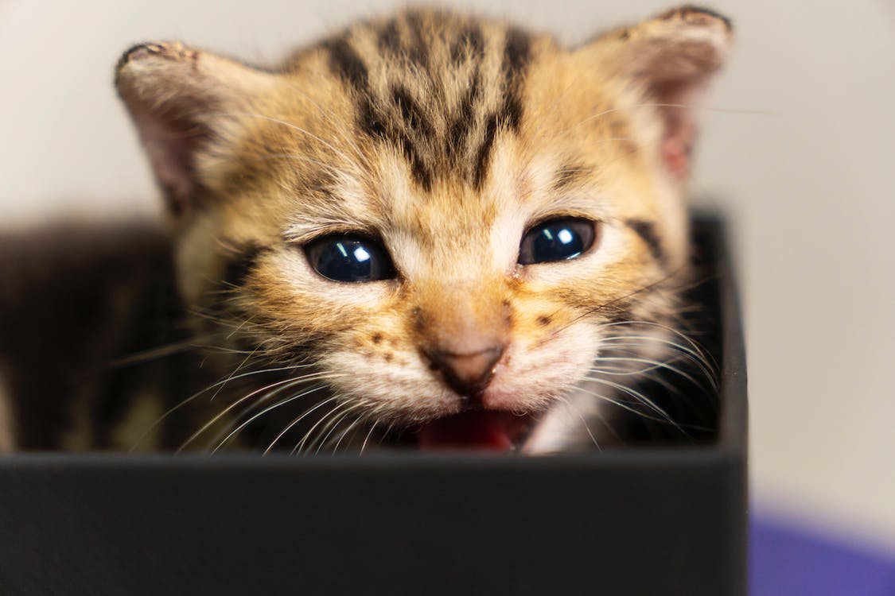
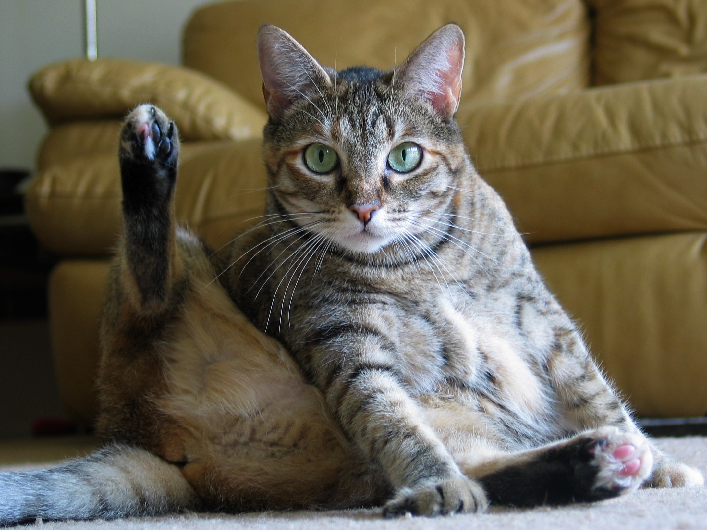

Kissanhoito:
Kissanhoito on avainasemassa pitämään karvainen ystäväsi onnellisena ja terveenä. Tässä osiossa tarjoamme vinkkejä ja ohjeita oikeanlaiseen ruokintaan, turkinhoitoon sekä liikunnan ja aktiviteettien tarjoamiseen kissallesi.
Kissanhoito on avainasemassa pitämään karvainen ystäväsi onnellisena ja terveenä. Tässä osiossa tarjoamme vinkkejä ja ohjeita oikeanlaiseen ruokintaan, turkinhoitoon sekä liikunnan ja aktiviteettien tarjoamiseen kissallesi.
Kissan ravitsemus on tärkeä osa sen terveyttä ja hyvinvointia. Laadukas kissanruoka tarjoaa kaikki tarvittavat ravintoaineet. Varmista, että kissallesi annetaan laadukasta kissanruokaa, joka on suunniteltu vastaamaan sen ravitsemustarpeita.
Kissan ruokavalio on keskeinen tekijä sen terveyden ja hyvinvoinnin ylläpitämisessä. Laadukas ruoka tarjoaa kaikki tarvittavat ravintoaineet, jotka kissasi tarvitsee. Tärkeää on varmistaa, että valitset kissallesi laadukasta ruokaa, joka täyttää sen ravitsemukselliset tarpeet.
Kissan turkinhoito on tärkeää pitääkseen sen terveenä ja hyvinvoivana. Säännöllinen harjaus auttaa poistamaan irtoavan karvan ja estää turkin takkuuntumisen. Lisäksi kissan kynsien leikkaaminen ja korvien puhdistaminen ovat osa hygieniarutiinia.
Kissan aktivointi ja lelut ovat tärkeitä pitämään sen virkeänä ja onnellisena. Tarjoa kissallesi monipuolisia aktiviteetteja, kuten leikkimistä, metsästystä ja tutkimista, sekä erilaisia leluja, jotka stimuloivat sen mieltä ja kehoa. Vaihtele leluja säännöllisesti pitääksesi kissasi kiinnostuneena ja aktiivisena.